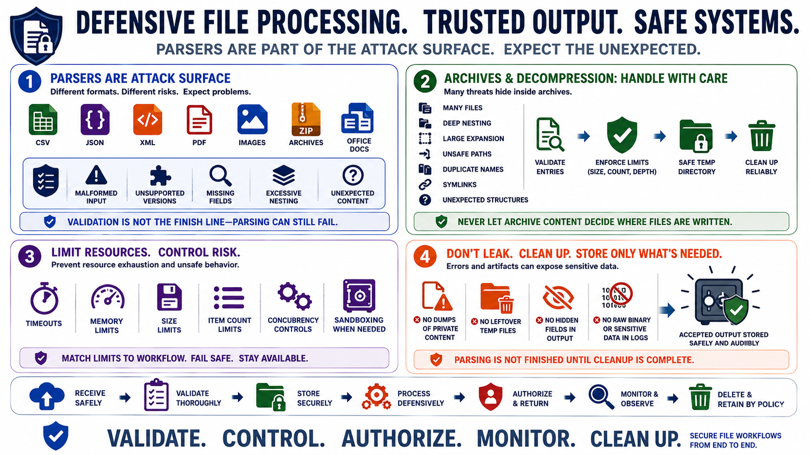

Processing Files Safely
Connecting to LMS... Progress: in progress

Narration
File processing should be defensive because parsers are part of the attack surface. CSV, JSON, XML, PDF, images, archives, and office documents each have different structure, metadata, resource behavior, and parser dependencies. A file that passes upload validation may still fail during parsing. The processor should expect malformed input, unsupported versions, missing fields, excessive nesting, and unexpected content.
Archive and decompression workflows need particular care. Archives may contain many files, deeply nested directories, large expanded content, unsafe paths, duplicate names, symlinks, or unexpected structures. Processing should validate entries before extraction, enforce total expanded size limits, reject unsafe paths, and use temporary working directories that are cleaned up reliably. Do not let archive contents decide where files are written.
Resource exhaustion can occur through large files, complex documents, image dimensions, nested structures, decompression ratios, or expensive parser behavior. The application should set timeouts, memory limits, size limits, item count limits, and concurrency controls that match the workflow. Sandboxing at a high level may be appropriate for risky parsers or untrusted document conversions, especially when third-party tools are involved.
Errors, logs, and generated artifacts should avoid leaking sensitive file data. A parser exception should not dump private document contents. A failed conversion should not leave temporary files behind. A generated preview should not include hidden fields the user was not allowed to see. File processing is not finished when parsing succeeds; it is finished when accepted output is stored safely and temporary material is cleaned up.